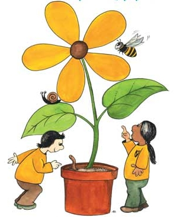

Project Intro
For our next project, we are going to learn a really fun app called Powerpoint. Powerpoint is an app that people use to make slideshows. Almost every job that grownups do in an office, they use powerpoint. Bankers, Lawyers, Policemen, Doctors, Artists, and even people in the Army use Powerpoint to show their ideas in a way that is easy and fun to look at. We are going to use Powerpoint to make a slideshow about the different parts of a plant.
Teaching Point
Students will learn the names of the different parts of a plant, and what each part does.
Different Plant Parts
Just like people and animals, plants have different parts that help it grow and stay alive. A plant starts out as a seed, and later grows into a strong plant. Later, it makes new seeds that will become new plants growing around it. For a plant to do this, it needs to use its different parts. Each part has it's own job. The main parts of the plant are:
- The Leaves
- The Stem
- The Flower
- The Roots
We will learn what each of these parts does. First we will watch a brainpop movie about Plant Parts. Then you will use other helpful sites to learn more on your own. Click on any of the slideshares below for a review.
Today's Assignment
Fill out the Form below to share what you know about the different parts of a plant.
Back to School Portal